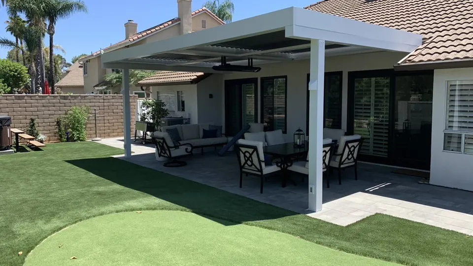
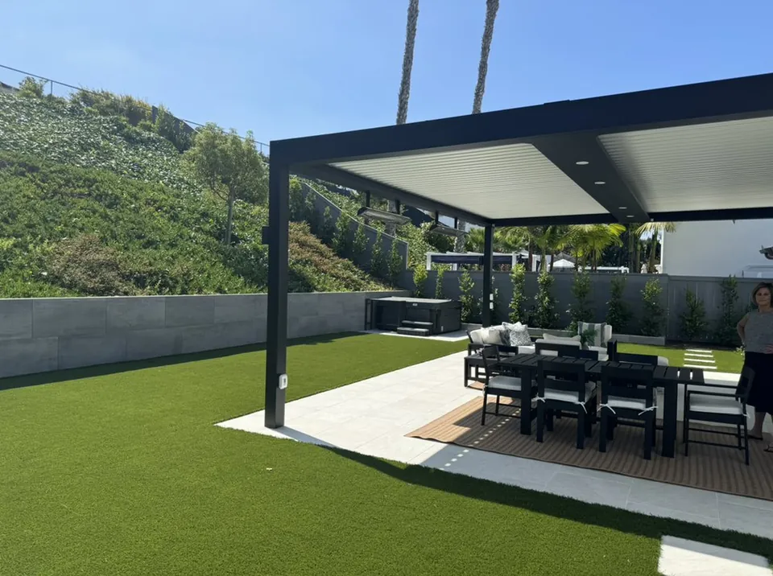
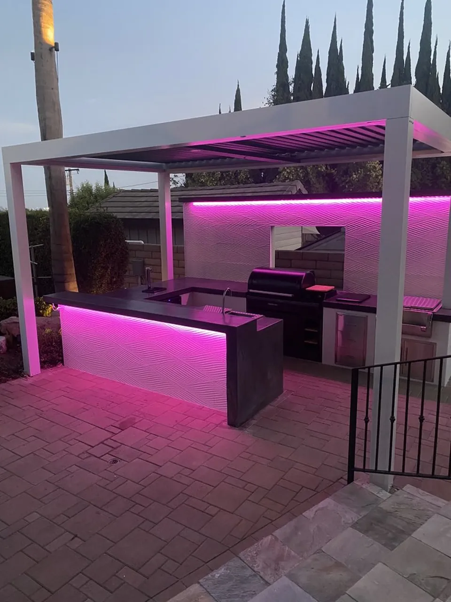
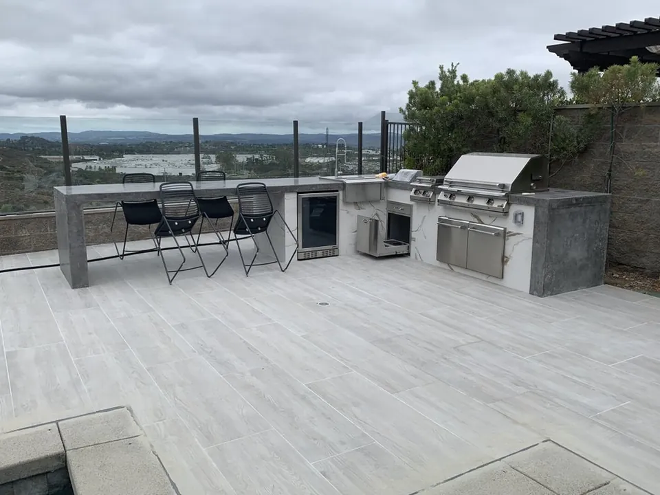
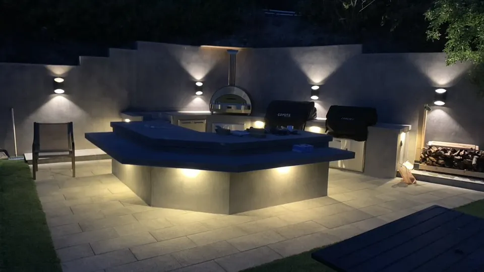
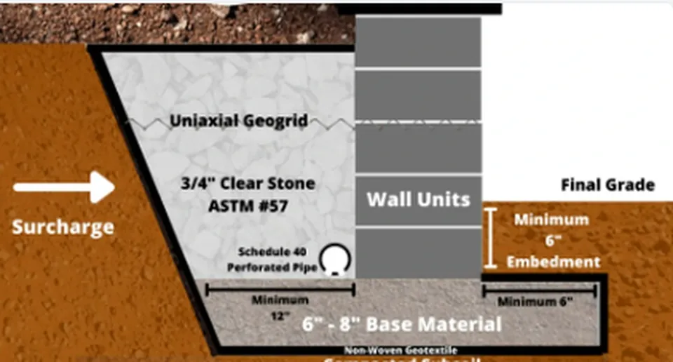

Worn Concrete
Replace cracked, stained, or uneven areas with properly prepared pavers, concrete, stone, and durable finish systems.
Navo Builders · Orange County design-build craftsmanship
Navo Builders delivers hardscape design and installation OC homeowners can trust—from custom driveway pavers Orange CA and patios to retaining walls, outdoor kitchens, pool deck pavers, landscaping, masonry, and complete outdoor remodeling. Work with a licensed hardscaping contractor Orange County families can call for durable construction and clear communication.
Built for beauty, drainage, and long-term performance
Cracked concrete, poor drainage, steep grades, and disconnected outdoor spaces can limit the way a property looks and functions. Navo Builders combines Hardscaping, Pavers, Landscaping, Masonry, and Remodeling into a cohesive design-build approach for Orange County homes.
Replace cracked, stained, or uneven areas with properly prepared pavers, concrete, stone, and durable finish systems.
Improve grading, runoff control, and property protection with integrated drainage and engineered retaining solutions.
Create defined areas for dining, entertaining, relaxing, parking, guests, rental income, and everyday California living.


Local expertise across Orange County
Navo Builders provides hardscape design and installation across Orange County, tailored to each property's architecture, grade, drainage, and everyday use. From custom pavers to complete outdoor living spaces, every project includes thoughtful planning, clear material guidance, and lasting workmanship.
Hire a top hardscape contractor in Orange, CA for custom driveway pavers, or work with a paver patio builder Villa Park homeowners trust for courtyards, walkways, outdoor kitchens, and entertaining spaces.
Schedule an Anaheim Hills hardscape installation, work with a retaining wall contractor in Anaheim, CA for slope and drainage needs, or plan your project with an outdoor living space builder in Brea, CA and North Orange County.
Choose custom paver patio installation in Yorba Linda, access complete Tustin hardscaping services, or partner with a North Tustin patio and paver contractor for refined, property-specific outdoor construction.
Plan an Irvine paver driveway installation, a Costa Mesa outdoor remodel, a luxury Newport Beach hardscape design, or Huntington Beach pool deck pavers with coordinated materials and premium finishes.
Our expertise: Hardscaping | Pavers | Masonry | Remodeling
Select a service to view the full scope, benefits, project images, and consultation options.

Complete backyard transformations combining hardscape, landscaping, and outdoor living features.
Learn More →
Premium porcelain paver installations creating durable and elegant outdoor surfaces.
Learn More →
Custom concrete paver installations for driveways, patios, and outdoor areas.
Learn More →
Professional concrete installation for patios, walkways, and outdoor improvements.
Learn More →
Custom outdoor kitchens and BBQ islands designed for entertaining.
Learn More →

Custom patio covers and pergolas built for shade and outdoor comfort.
Learn More →
Pool deck upgrades, hardscape improvements, and outdoor entertainment areas.
Learn More →
Structural retaining walls and block wall solutions for landscape stability.
Learn More →
Low-maintenance landscaping with turf, plants, and outdoor design.
Learn More →


Complete outdoor renovations combining multiple features into one cohesive space.
Learn More →
Commercial outdoor improvements and hardscape construction solutions.
Learn More →Navo Builders project portfolio
Explore completed Pavers, Masonry, outdoor kitchens, patios, pool environments, fire features, Landscaping, and exterior Remodeling.
Select any project image for a larger view.
Customer Reviews
See what homeowners say about their experience working with Navo Builders.

Hands-on hardscape expertise, responsive communication, and a standard of workmanship built around the homeowner’s vision.
Why homeowners choose Navo Builders
High-end outdoor construction requires careful site preparation, drainage awareness, clean transitions, accurate masonry, and responsive communication. Navo Builders brings proven field experience into a consistent design-build process.
Details are reviewed in the field so the finished work feels intentional, solid, and properly integrated.
Layouts, materials, patterns, elevations, and features are selected for the property—not copied from a template.
Expect practical recommendations, responsive coordination, and a clear understanding of the project scope.
Work with a licensed and insured California contractor serving Orange County under CSLB #1126018.
Ideas for Your Next Project
Explore practical planning advice about pavers, retaining walls, patio costs, outdoor kitchens, and hillside drainage.
A complete Orange County backyard transformation featuring porcelain paving, pool-deck improvements, drainage, an outdoor kitchen, covered entertaining space, fire pit, seating wall, stone veneer, and spa improvements.
Read ArticlePlan a complete Orange County outdoor living remodel with porcelain and concrete pavers, outdoor kitchens, fire features, pool-area improvements, landscaping, drainage and custom hardscape.
Read ArticlePaversCompare durability, heat, maintenance, repairs, and long-term value before selecting a driveway or patio surface.
Read Article Masonry & Permits
Masonry & PermitsReview common wall-height, surcharge, slope, engineering, and local permit considerations before construction.
Read ArticleCost GuideUnderstand the material, access, demolition, drainage, and design factors that influence a custom patio budget.
Read ArticleOutdoor LivingUse compact islands, built-ins, coordinated materials, and right-sized appliances to make a small yard work harder.
Read ArticleDrainageLearn how drains, terraced walls, permeable pavers, and proper grading can protect a hillside property.
Read ArticleLocal hardscaping questions
Start with the essentials, then schedule an on-site conversation for recommendations specific to your property.
Ask About Your ProjectNavo Builders provides Hardscaping, Pavers, Landscaping, Masonry, and Remodeling, including custom patios, driveways, retaining walls, outdoor kitchens, pool deck pavers, water features, and exterior hardscape improvements throughout Orange County.
Yes. Navo Builders operates as a licensed and insured California contractor under CSLB license #1126018.
Yes. Navo Builders installs paver and concrete driveways in Orange and surrounding Orange County cities, including custom patterns, base preparation, grading, drainage planning, repair, and restoration.
Yes. Custom ADU construction and hardscaping can be planned together so utility access, drainage, pathways, patios, landscaping, and exterior finishes work as one cohesive property design.
Primary service areas include Orange, Villa Park, Anaheim Hills, Anaheim, Brea, Yorba Linda, Tustin, North Tustin, Irvine, Costa Mesa, Newport Beach, Huntington Beach, and nearby Orange County communities.
Ready to transform your outdoor space?
Tell us what you want to improve. We’ll help define the right next step for your driveway, patio, retaining wall, outdoor kitchen, pool deck, landscape, masonry, or full outdoor remodel.